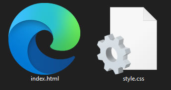

Co to jest CSS?
Z lekcji informatyki wiesz już pewnie co to jest język HTML. No więc w skrócie, CSS (kaskadowy arkusz stylów) jest rozszerzeniem HTMLa. Pozwala on na bardziej zaawansowane ‘dekorowanie’ strony. Wraz z trzecim filarem stron internetowych, czyli JavaScriptem, pozwala on tworzyć bajeczne efekty, takich jak theLAB Berkeley , GUSTO.PLAY (studiogusto.com) , albo Flipaclip.
Strona theLAB
Wygląda to na trudne zadanie
Ten poradnik nie pozwoli Ci uzyskać aż takich efektów jak w podlinkowanych stronach, bo to byłoby za trudne na poziomie szkoły podstawowej. Postaram się jednak jak najlepiej wytłumaczyć fundamentalne zastosowania CSSa i jak z jego pomocą zrobić schludną i estetyczną stronę.
W czym pisać takie strony internetowe?
W szkole poznałæś narzędzie pod nazwą Notepad++. Nie jest on bynajmniej narzędziem złym, jednak o wiele lepszy do tego celu jest program Visual Studio Code Microsoftu (tak, tego Microsoftu od Windowsa), którego najnowszą wersję można pobrać tu. Proces instalacji jest prosty. Jeśli masz z nim problemy, poproś o pomoc rodzica. Visual Studio Code to bezpłatny program do pisania kodu, w tym HTML i CSS. Posiada on multum opcji, od których naprawdę ciężko jest się odzwyczaić.
No to do dzieła!
Utwórzmy nowy folder na naszą stronę i utwórzmy w nim dwa pliki: index.html i style.css. Zaznaczmy je, kliknijmy na nie PPM i wybierzmy opcję Open With Code. Ukaże nam się okno naszego świeżo zainstalowanego programu. Zauważmy, że na górze widoczne są karty z nazwami plików, które utworzyliśmy. Możemy te karty dowolnie przeciągać i ustawiać. Zróbmy tak, żeby po lewej stronie znajdował się nasz plik .html, a po prawej plik .css. Ok. No i co teraz? Piszemy podstawową strukturę pliku HTML? Nic bardziej mylnego. Piszemy po prostu ! i klikamy enter. VSC sam rozpisze nam najpotrzebniejsze elementy strony.
Dołączanie pliku CSS
Nasza strona nie widzi od razu naszego arkusza stylów. Musimy jej ‘pokazać’ gdzie się on znajduje. W tym celu w headzie musimy wpisać:
HTML
<link rel="stylesheet" href="style.css">Proste stylowanie tekstu
Zróbmy teraz prostą stronę. Daj nagłówek <h1>, jakiś tekst w <p> no i może jakieś zdjęcie.

Jak widać, nasza strona wygląda, bądźmy szczerzy, źle. Skopiuj i wklej poniższy kod do pliku CSS.
CSS
body {
background-color: darkblue;
}
h1 {
color: cyan;
text-align: center;
text-decoration: underline;
}
p {
color: white;
}
img {
width: 100%;
height: 400px;
}Naszym oczom ukazała się ta piękność:

Ale co to wszystko znaczy?
CSS
body {
background-color: darkblue;
}Wyłumaczę teraz, co zrobiliśmy.
Elementowi body (czyli całej widocznej części strony internetowej) ustaliliśmy wartość atrybutu background-color (ang. kolor tła) na darkblue (ang. granatowy)